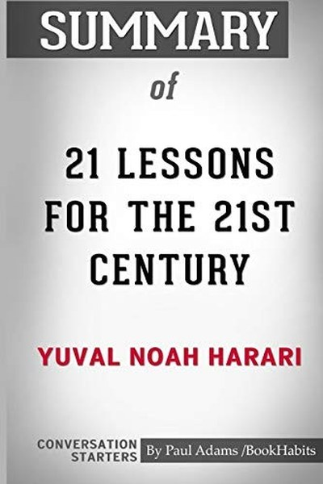

Library › Psychology & People
21 Lessons for the 21st Century — Summary & Key Lessons

The big questions of our time — from AI to fake news to meaning.
📖 OPEN THE FULL INTERACTIVE BREAKDOWN →🌐 Read it in Hindi, Hinglish, Gujarati, Tamil & 22 more languages — free, with audio.
💡 The Big Idea
History gave us the stories of the 20th century; technology is now dissolving them. Harari's warning: the biggest threats of the 21st century are not nuclear war or climate change alone, but the collapse of shared truth, the rise of AI and surveillance, and the obsolescence of humans in the job market. His response is not a prediction but a practice: know yourself, stay humble, keep your mind clear — because the future belongs to those who can adapt.
🧠 The 7 Key Lessons
Lesson 1: Clarity Is Power in an Age of Noise
The Information Deluge
Harari's opening claim: information used to be scarce and valuable; today it is abundant and weaponized. Attention is the scarce resource, and clarity — the ability to distinguish signal from noise — is the new superpower. The lesson: don't measure your information diet by quantity; measure it by what it lets you do. The person who reads less but thinks clearer beats the one drowning in feeds.
📖 Example: Fake news, viral outrage and clickbait all exploit one thing: attention without clarity. The antidote is deliberately curated input and slow thinking. The practical edge: 'clarity is power in an age of noise' is not a one-time decision — it's a habit that… Read the full example →
⚡ Do this: Audit your daily information intake. Cut one low-value feed and replace it with one high-quality source this week.
Lesson 2: AI Will Disrupt Jobs — Adapt or Be Left Behind
Work
Harari's uncomfortable prediction: AI and automation will not just replace manual labour — they will out-think professionals in diagnosis, law, translation and more. The lesson isn't panic but preparation: build skills that machines can't easily copy — creativity, emotional connection, judgment, adaptability. The most future-proof asset is not a specific job but the capacity to learn new ones.
📖 Example: AI that reads medical scans or drafts legal documents doesn't just assist — it reshapes the entire profession. The professionals who thrive will be those who work with it, not against it. Read the full example →
⚡ Do this: Ask: what part of my work would an AI do better in 5 years? Start building the human part — judgment, relationships, creativity — today.
Lesson 3: The Liberal Story Is Under Stress — Question All Stories
Narratives
Harari's recurring theme: humans run on stories — religion, nations, free markets, liberalism — and all stories are now under stress from technology and global crisis. The lesson: don't be owned by any narrative. Hold your beliefs as tools, not identities. The person who can update their story when evidence changes stays sane in a changing world; the person fused to their story breaks with it.
📖 Example: Harari shows how a single generation has watched the stories of nation, religion and market dominance all wobble simultaneously. The real test of this lesson is a bad day: the principle that survives a crisis, a tight deadline and a doubting colleague is the… Read the full example →
⚡ Do this: Pick one belief you hold fiercely. Find one strong counter-argument and sit with it for 10 minutes without defending.
Lesson 4: Terrorism Is Psychological Warfare — Don't Overreact
Terrorism
Harari's sobering data point: terrorism kills far fewer people than cars, disease or poor diet — but it hijacks our attention and provokes overreaction that causes more damage than the attacks. The lesson: the terrorist's weapon is your fear and your government's reaction. Calibrated response — security without panic — is the actual victory. Don't let the exceptional dictate the normal.
📖 Example: Each major attack triggers responses — wars, surveillance, spending — whose costs far exceed the attack's direct damage. That asymmetry is the terrorist's true weapon. In practice, 'terrorism is psychological warfare' shows up in tiny daily choices long… Read the full example →
⚡ Do this: When a scary news event spikes, pause before reacting: what is the actual risk to me, and what response is proportionate? Act from that, not from the spike.
Lesson 5: The Data Economy Is Making You the Product
Surveillance
Harari's most chilling chapter: the 21st century's most valuable resource is not oil but data — and your attention, behaviour and choices are being mined and modelled. Algorithms know you better than you know yourself, and the question is who uses that knowledge. The lesson: treat your data like your money. Understand what you're trading when you use 'free' services, and protect your inner life.
📖 Example: Companies and governments that can model your preferences, fears and votes can nudge you without you noticing — the ultimate power imbalance. Most people nod at this principle and change nothing. The gap between agreeing and acting is where the whole game is… Read the full example →
⚡ Do this: Review your top three apps: what data do they collect, and what do they sell or influence? Make one privacy improvement this month.
Lesson 6: Know Yourself — The Only Real Foundation
Meditation and Meaning
Faced with overwhelming uncertainty, Harari's answer is not a new ideology but an old practice: self-knowledge. He credits his own daily meditation (Vipassana) with keeping his mind clear enough to write. The lesson: when the world's stories collapse, the only stable ground is the ability to observe your own mind. Clarity about your own patterns is the one skill that never becomes obsolete.
📖 Example: Harari spends two hours daily in meditation — not as an escape but as the operating system that lets him think clearly about chaos. The uncomfortable truth about this lesson: it requires doing the boring version first — the unglamorous reps that nobody claps… Read the full example →
⚡ Do this: Start 10 minutes of daily self-observation — meditation or journaling — and note what patterns you notice about your own reactions.
Lesson 7: Humility Before the Unknown Is Wisdom
Ignorance
Harari ends with a plea: the most honest stance before the future is 'I don't know'. Experts, prophets and ideologies that claim certainty are the dangerous ones — because the 21st century is genuinely unprecedented. The lesson: intellectual humility is not weakness; it is the condition for learning. Hold your plans lightly, keep your options open, and prefer questions to certainties.
📖 Example: Every confident prediction of the last century — about technology, politics, economics — was eventually humbled. The wise prepare for surprise. humility Before the Unknown Is Wisdom Read the full example →
⚡ Do this: Write down your top three assumptions about the next 10 years. Mark each one with your confidence level and a 'what if I'm wrong?' alternative.
✅ 5-Step Action Plan
- Cut one low-value information feed and add one high-quality source.
- Identify the AI-vulnerable parts of your work and build the human edge.
- Test one fierce belief against a strong counter-argument.
- Make one privacy improvement in your digital life this month.
- Start 10 minutes of daily self-observation or journaling.
⚠️ When This Doesn't Work
Harari's 'the future belongs to those who can adapt' is the most important warning of our era — and Google+ is the proof that even the future's owners can't predict it: the most powerful tech company on earth, with infinite resources and the best minds, built a social network that failed in three years because they couldn't understand humans as well as they understood machines. Harari's book is about technology's power; the caveat is that technology's power includes its power to fail. The 21st century's biggest risks are not AI taking over — they are humans misreading humans at scale. Adapt, yes — and adapt to each other first.
💀 The Graveyard Proves It
➕ Google+ — The $2B Social Network Nobody Asked For. Burn: Billions in investment; ~2 billion accounts that were mostly empty; shut down. Read the full case study →
💬 Best Quotes from 21 Lessons for the 21st Century
- “In a world deluged by irrelevant information, clarity is power.”
- “The greatest threat to our planet is not pollution or climate change — it is the belief that someone else will save it.”
- “You cannot know the future; you can only prepare for it.”
Interactive version: mark lessons as read, listen in your language, share quote cards.